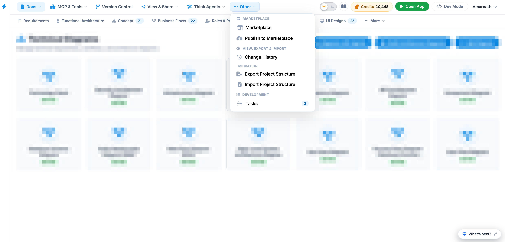

Other
The Other menu in the top navigation bar provides quick access to supplementary platform features, project migration utilities, historical change tracking, and development task management.

Menu Items Description
Marketplace
- Marketplace: Opens the ecosystem store to browse, discover, and install pre-built solution templates, integrations, and community-created assets.
- Publish to Marketplace: Allows creators to publish their custom project blueprints, designs, or templates to the platform's public or organizational marketplace.
View, Export & History
- Change History: Tracks and displays an audit log of past project modifications, edits, and agent actions, enabling users to review previous project versions.
Migration
- Export Project Structure: Downloads the underlying architectural framework, configurations, and metadata of the current project into a portable file for backup or transfer.
- Import Project Structure: Uploads and restores a previously exported project structure file into the workspace to duplicate or restore a project configuration.
Development
- Tasks: Displays active development tasks, pending action items, or system-generated to-dos assigned within the current project (a badge count highlights pending items).